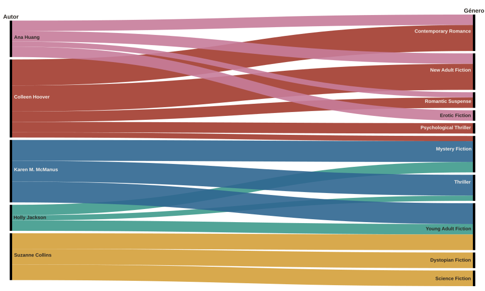

Para este trabajo, decidí explorar mis propios datos de lectura: una selección de
algunos de los libros que leí entre 2019 y 2026, con sus géneros, autores, países y puntuaciones. A partir de estos datos
armé estas visualizaciones que cuentan, cada una a su manera, una parte de esta historia:
qué leo, a quiénes leo, de dónde vienen y qué es lo que más disfruto.
¿Cómo cambiaron mis géneros leídos a lo largo de los años?
Empecé con la distopía juvenil de The Hunger Games, y desde 2022 el misterio se
volvió una constante. En 2023 aparece fuerte la romance contemporánea y en 2025, el año
con más libros de esta selección, se suma el thriller psicológico. En 2021 la curva baja porque ese año leí
clásicos que quedan fuera de los géneros principales.
¿Qué autores dominan mis géneros favoritos?
Unas pocas autoras aparecen una y otra vez: Colleen Hoover en la romance,
Karen M. McManus y Holly Jackson en el misterio juvenil, Suzanne Collins en la distopía.

¿De dónde vienen los autores que leo?
Casi dos de cada tres libros de esta selección son de autores estadounidenses, y otros seis son
británicos. Mi lectura es muy anglosajona, algo que tiene sentido porque leo casi todo
en inglés. Los pocos autores de otros países (Colombia, Grecia, Austria) aparecen sobre
todo en mis lecturas en español.
¿Qué autores leí más a lo largo de los años?
Acá va el bar chart race
¿Las sagas me enganchan más que los libros sueltos?